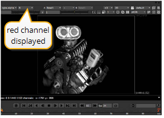

To display the images in a Viewer window:
| 1. | Drag the connector from the Viewer node onto the Read node for the engine.v01 clip. |
Here’s an alternate method: Select the engine.v01 clip node and then press 1 to connect to the Viewer node. Nuke displays the node’s output in the Viewer window.
| 2. | Press the Alt key (Mac users press Option) and the left mouse button, and drag the mouse pointer across the Viewer window to pan. |
| 3. | Press Alt (Mac users press Option) and the middle mouse button, and drag to zoom in/out. You can also use the “zoom” dropdown menu at the top of the Viewer to magnify the view. |
| 4. | Press F to fit the current image into the borders of the Viewer window. |
This image has different channels of information you can view. The “RGB” label appears at the top because the Viewer now shows the result of the red, green, and blue channels.
| 5. | To view individual color channels, press R (red), G (green), B (blue) or A (alpha). As you press each keyboard shortcut, the label at the top of the Viewer reflects the displayed channel. |

| 6. | Press one of the channel keyboard shortcuts again to return to the “RGB” display, or choose RGB from the Viewer’s channel dropdown menu. |
In addition to the standard color channels for red, green, blue, and alpha, this image also includes channels for specular highlights, reflections, and other masks.
| 7. | To view additional channels, press A to display the alpha channel, and then select the lightingpasses.reflection channel from the Viewer channel dropdown menu. |

You now see the reflection mask from the image file.
| 8. | Select rgba.alpha from the Viewer channel dropdown menu to reset this as the preferred channel when you press the A key. |
| 9. | Press A again to toggle the display and show all color channels. |
|
|